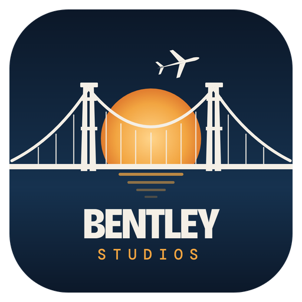

Landmark and bridge packs for Microsoft Flight Simulator. Real structures in the right place at the right height, lit for night flying.
Each pack covers one city: the bridges, towers and stadiums you look for on approach.
These cities are being surveyed now. Vote in the forum to move one up the list.
| City | Airport | Position | Status |
|---|---|---|---|
| Pittsburgh | KPIT | 40.44°N 80.00°W | Surveying |
| Johannesburg | FAOR | 26.20°S 28.05°E | Surveying |
| Durban | FALE | 29.86°S 31.02°E | Surveying |
| Cape Town | FACT | 33.92°S 18.42°E | Surveying |
Missing your city? Add it to the request thread.
Post in the forum for install help, bug reports and city requests. If you bought on simMarket, you can also open a ticket there.